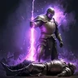
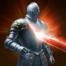
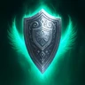
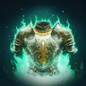

Leveling progress
Tick steps as you go. Progress is saved in this browser, separately for each class.
Overview
Templar is AION 2's main tank, and it still deals real damage. Its whole build rests on a "holy trinity" of skills taken to 20 as fast as possible — Judgment, Punishment and Pummel — that you use as often as you can. Survivability is not what limits a Templar; damage is.
The build in one sentence
Shield skills trigger Judgment: spam the Judgment line on a side button, hold the macro for Pummel and its procs, charge Punishment on cooldown, and block the big hits to keep Fury on the party.
This guide follows SolAshur's global-launch Templar build (solashur.com, September 27) and his video walkthrough.
Global Season 1: what changes
Global servers open on October 5, 2026 (Founder's early access from September 30). What that means for Templar:
- 4 stigmas at level 45. SolAshur's Taiwan loadouts had six; for global he drops two per profile (listed in Stigmas).
- Create three skill presets before launch — PvX, PvP and PvE — so switching content is one click.
- Collect Skill Point Shards early: they gate how fast the holy trinity reaches 20.
- Join a legion — solo Abyss farming is ineffective.
- Check stigma names at launch: some may be renamed in the global client.
Skills
The holy trinity goes to 20 first. Skills reach 10 from skill points, 14 with Daevanion, then rings and arcana push the trinity further. Specializations below are SolAshur's.
-
Judgment 20Your core damage: Shield Smite, Warding Strike, Shield Rush and Doom Shield trigger it, and at 16 its cooldown disappears.
- 8Extra damage on hit
- 12Critical Hit on hit
- 16Remove cooldown
All specializations
- 8Absorbs 1% HP
- 8Deals extra damage on attacking a target afflicted with Impact-type status
- 8Extra damage on hit
- 12Critical Hit on hit
- 16Remove cooldown
-
Punishment 20Charged burst — DoT, guaranteed crit through Block and +30% skill speed. Never take the mobile or HP-absorb picks: "bait" once you have enough attack speed.
- 8Inflicts Damage over Time to target on hit
- 8+30% Skill Speed
- 16Ignores Block and Evasion and lands as a Critical Hit
All specializations
- 8Absorbs 10% HP
- 8Inflicts Damage over Time to target on hit
- 8+30% Skill Speed
- 12Changes to mobile skill
- 16Ignores Block and Evasion and lands as a Critical Hit
-
Pummel 20Filler and stagger; every Punishing Strike shortens Punishment. Get it to 20 as soon as possible.
- 8Deals up to 12% more damage when less targets are hit
- 12-1s [Punishment] cooldown on landing [Punishing Strike]
- 16Activates [Punishing Strike] 1 extra time
All specializations
- 8-20% MP consumed
- 8[Punishing Strike] absorbs 3% HP
- 8Deals up to 12% more damage when less targets are hit
- 12-1s [Punishment] cooldown on landing [Punishing Strike]
- 16Activates [Punishing Strike] 1 extra time
-
Annihilate 16 20+100% damage to CC-immune bosses, −10s cooldown. The alternate build takes it to 20 for the AoE knockdown pick.
- 8+50% Multi-Hit on hit
- 8+100% damage to targets with Incapacitated Immunity
- 12-10s cooldown
All specializations
- 8+50% Multi-Hit on hit
- 8+20% Knockdown Chance
- 8+100% damage to targets with Incapacitated Immunity
- 12-10s cooldown
- 16Changes to AoE Skill
-
Shield Smite 16Triggers Judgment; −2s cooldown and a 50% chance to proc Debilitating Smash.
- 850% chance to trigger [Debilitating Smash] on hit
- 12-2s cooldown
All specializations
- 8+1s Stun duration
- 8Removes MP Cost and restores 200 MP on hit
- 850% chance to trigger [Debilitating Smash] on hit
- 12-2s cooldown
- 16AoE Stun
-

Debilitating Smash 12Proc after a block or Shield Smite; ignores Block and Evasion.- 830% chance to inflict Stun for 3s
- 12Ignores Block and Evasion and lands as Multi-Hit
All specializations
- 830% chance to inflict Stun for 3s
- 8+3s Debilitate duration
- 8-60% Incoming Heal during Debilitate
- 12Ignores Block and Evasion and lands as Multi-Hit
- 1625% chance to reset cooldown on Block
-
Warding Strike 12Triggers Judgment; Block and damage tolerance during Warding.
- 8+100 Block during Warding
- 12Adds PvE Damage Tolerance and PvP Damage Tolerance increase effect when more targets hit to Warding
All specializations
- 8-5s cooldown
- 8+100 Block during Warding
- 8Heal over Time during Warding
- 12Adds PvE Damage Tolerance and PvP Damage Tolerance increase effect when more targets hit to Warding
- 16+10% PvE Damage Tolerance and +5% PvP Damage Tolerance to party members on skill use
-

Flash Rampage 12Only on Staggered targets; −1s to all cooldowns per hit. In the PvE macro, but skip its Daevanion nodes — it falls off mid-game.- 12Multi-Hit on hit
- 16-1s all cooldowns on hit
All specializations
- 8Absorbs 5% HP
- 8Restores 120 MP on hit
- 8Changes to mobile skill
- 12Multi-Hit on hit
- 16-1s all cooldowns on hit
-
Shield Rush 12Dodge → dash, triggers Judgment; −10s cooldown and +10m range.
- 8+10m Range
- 12-10s cooldown
All specializations
- 8Restores 300 Stamina on hit
- 8+10m Range
- 8Changes to Charge Skill and deals AoE damage
- 12-10s cooldown
- 16+25% Stun Chance
-
Vicious Strike 10Basic attack on LMB; 10 from skill points is enough.
All specializations
- 8+20% MP restored
- 8Absorbs 1% HP
- 8+50% Multi-Hit on hit
- 12-2s [Warding Strike] cooldown on hit
- 16Adds [Threatening Blow] Chain Skill
Passives
| # | Passive | Why |
|---|---|---|
| 1 | Fury | +PvE Damage Boost for you and the party after every block — the reason groups want a Templar. |
| 2 | Punishing Benediction | Critical Hit and an extra-damage proc on every hit; the Bell arcana rolls it. |
| 3 | Insulting Roar | Enmity plus Attack on front attacks. |
| 4 | Ironclad Defense | Defense and Endurance — the core of the endurance stat build. |
Gear path
If you start on day one, this is the route:
- Holy Spirit set — farm it in the lower Abyss (AP, pets and gold drops per kill, plus boss spawns) or anywhere in the open world. Aim for about 1,600 combat power.
- Skip the first dungeon tier: go to Urugugu Canyon and Vakron Sky Island for the sword, the guard and the Vakron armor.
- Use Transcendence to get ready for Fire Temple (Enraged Kromede weapon) and Ferocious Horn (Nuakum armor). Nuakum is the safer farm: nearly every piece is an upgrade, while the weapon chest can drop other classes' weapons.
- End goal — PvE: White Dragon Lord sword, guard and accessories with Nuakum armor (full White Dragon armor only adds PvE tolerance and is whale territory). PvX: Enraged Kromede sword with the White Dragon guard.
Wings: Dark Veil early (attack bonus, damage boost), Talisra late (attack, accuracy, cooldown reduction).
Stats, soul binds, pets
Two stat builds, chosen by what the stats synergize with:
- A · Block + Evasion + Dexterity — early and mid game, against opponents without much Accuracy. Dexterity feeds both Block and Evasion. SolAshur's pick for launch.
- B · Block + Endurance + Ironclad Defense — late game: at 100% Endurance a hit deals 50% less damage.
| Slot | Unique line | Then |
|---|---|---|
| Weapon, guard | Combat Speed + Weapon Damage Boost | Might + Multi-Hit; Precision if under the accuracy cap |
| Helm | Incoming Healing | Attack, Might, Critical Hit, Precision |
| Shoulders | Critical Damage Boost | Attack, Might, Precision, Perfect Chance |
| Chest | Damage Boost | Attack, Might, Critical Hit, Constitution |
| Gloves | Combat Speed | Perfect Chance, Attack, Might, Multi-Hit |
| Legs | Perfect Chance | Damage Tolerance, Attack, Might, Constitution |
| Boots | Move Speed | Perfect Chance, Attack, Might, Dexterity |
| Cloak | Critical Damage Tolerance | Perfect Chance, Damage Tolerance, Attack |
| Rings / earrings / necklace | Rings: your top 4 active skills · Earrings: top 4 passives · Necklace: 2 actives + Attack, Critical Hit, Weapon Damage Boost | |
Pets (Genus Insight) — don't skip them; in a couple of weeks they are the difference between hitting and missing. Non-special insight gives Attack and Accuracy, special insight Attack and Damage Boost. Lock slots in this order: 4 → 7 → 2 and 8 → the rest.
Pantheon: Wisdom (Double Chance) first, Space (Block); then Illusion (cooldown reduction) for PvETime (attack speed) for PvP.
Arcana
| Card | Roll for |
|---|---|
| Chalice (Grail) | Pummel, Punishment |
| Parchment | Judgment, Punishment |
| Compass | Pummel, Shield Smite |
| Bell | Fury, Punishing Benediction |
Go for damage set effects over survivability — Templar's survivability is already enough.
Daevanion boards
Daevanion takes your skills from 10 to 14 and adds stats. Each blue node gives +1 level to its skill.
- Priority: blue nodes for Judgment, Punishment, Pummel, then Shield Smite and Annihilate; orange nodes next.
- Skip: MP nodes (put the points into Attack), Flash Rampage nodes, and the green Warding Shield / Guardian Shield nodes unless you have spare points.
- Ariel, not Azphel at 45.
- Azphel, not Ariel at 45.
Stigmas
Breadth before depth: put 1 point into all four first, then push Empyrean Lord's Punishment and Battlefield Banner to 5, then chase the breakpoints — Empyrean Lord 10 → 15, Banner 10 → 15, Doom Shield 15.
-
Empyrean Lord's Punishment Lv 15AoE damage with big stagger (+50 at 10); at 15 +10% PvE Damage Boost. Needed on bosses with stagger mechanics.
- 5Up to +20% damage when less targets hit
- 10+50 Stagger Gauge Damage
- 15+10% PvE Damage Boost and +5% PvP Damage Boost for 10s on hit
All specializations
- 5Up to +20% damage when less targets hit
- 10+50 Stagger Gauge Damage
- 15+10% PvE Damage Boost and +5% PvP Damage Boost for 10s on hit
- 20+25% Stun Chance
-
Battlefield Banner Lv 15Your damage buff: Multi-Hit, Weapon Damage Boost and Attack from Defense. The level-10 and 15 tiers are the good ones.
- 5+10% Multi-Hit Chance for duration
- 10+10% Weapon Damage Boost for duration
- 15+20% Attack increase proportional to Defense
All specializations
- 5+10% Multi-Hit Chance for duration
- 10+10% Weapon Damage Boost for duration
- 15+20% Attack increase proportional to Defense
- 20-30s cooldown
-
Doom Shield Lv 15Your main Judgment trigger. At 15 it resets on a kill — vital for PvX and pet farming.
- 5Resets [Annihilate] cooldown on hit
- 10+200 Block for 5s on hit
- 15Resets cooldown on defeating an enemy
All specializations
- 5Resets [Annihilate] cooldown on hit
- 10+200 Block for 5s on hit
- 15Resets cooldown on defeating an enemy
- 20+25% Knockdown Chance
-
Taunt Lv 5Aggro in group content. Drop it for solo PvE.
- 5Adds 10% PvE Damage Tolerance reduction and 5% PvP Damage Tolerance reduction effect to Shrink
All specializations
- 5Adds 10% PvE Damage Tolerance reduction and 5% PvP Damage Tolerance reduction effect to Shrink
- 10+10% Shrink Attack reduction
- 15-5s cooldown
- 20+2s Taunt duration, +5s Shrink duration
-

Nezekan's Shield alt.Survivability swap; not good before 15.- 5+20% all Element Tolerance for Protective Shield duration
- 10+2s Protective Shield duration
- 15+20% PvE Damage Tolerance and +10% PvP Damage Tolerance for Protective Shield duration
All specializations
- 5+20% all Element Tolerance for Protective Shield duration
- 10+2s Protective Shield duration
- 15+20% PvE Damage Tolerance and +10% PvP Damage Tolerance for Protective Shield duration
- 20Restores 20% of Max HP when Protective Shield is removed
-
Comrade in Arms groupSurvivability swap in groups. Drop it for solo PvE.
- 5Restores 25% of Max HP once if hit during Comrade in Arms while HP is 25% or less
- 10x1.5 [Guarding Seal] Protective Shield effect for the duration
- 15x1.5 [Block Pain] effect for the duration
All specializations
- 5Restores 25% of Max HP once if hit during Comrade in Arms while HP is 25% or less
- 10x1.5 [Guarding Seal] Protective Shield effect for the duration
- 15x1.5 [Block Pain] effect for the duration
- 20Restores 50% of caster's Max HP when the effect ends
| Profile | 4 stigmas | Alternates |
|---|---|---|
| PvE | Empyrean Lord's Punishment, Battlefield Banner, Doom Shield, Taunt | Nezekan's Shield, Comrade in Arms |
| PvX (all-purpose) | Empyrean Lord's Punishment, Executing Blade, Battlefield Banner, Doom Shield | Nezekan's Shield, Comrade in Arms, Second Skin |
Every swap costs something: without Doom Shield you lose Judgment procs, without Empyrean Lord stagger, without the Banner damage. If you need survivability, Doom Shield is the one to drop when the fight doesn't need its mobility.
Macro & rotation
AION 2 has two separate tools:
- Hotbar line — several skills stacked on one hotbar button. Pressing it casts the highest-priority skill that's ready, and in AION 2 the bottom slot has the highest priority. The cards show each line top to bottom as in the game.
- In-game macro — while you hold its key, it presses your hotbar lines in order and cancels animation tails. Skills on cooldown are skipped.
1. Hotbar lines
- 4 Pummel
- 3 Flash Rampage
- 2 Debilitating Smash
- 1 Annihilate
In-game order, top to bottom. 1 = highest priority — the bottom slot.
The in-game macro presses this line. Procs fire as soon as they light up; Pummel fills the rest. For PvX swap Flash Rampage for Doom Shield.
- 4 Doom Shield
- 3 Warding Strike
- 2 Shield Smite
- 1 Judgment
In-game order, top to bottom. 1 = highest priority — the bottom slot.
Spam it: every shield skill triggers Judgment, and Judgment always wins.
2. Keys
- LMBVicious Strike (quick slot 1).
- RMBThe in-game macro (Pummel line), 10 ms.
- Side buttonThe Judgment line. SolAshur binds it to R and has his mouse repeat R about 10 times a second.
- By handCharged Punishment on cooldown, Battlefield Banner, Empyrean Lord's Punishment for stagger, Taunt.
SolAshur covers his full hotkey setup in an earlier macro video; you will need to change a few in-game key bindings to match.
Recap
- Skills: Judgment, Punishment, Pummel 20 first; Annihilate and Shield Smite 16; the rest 12.
- Stigmas: Empyrean Lord's Punishment, Battlefield Banner, Doom Shield, Taunt — 1 point in each, then the breakpoints.
- Stats: Block + Evasion + Dexterity early, Block + Endurance late; don't skip pets.
- Gear: Holy Spirit → Urugugu / Vakron → Fire Temple and Ferocious Horn → White Dragon weapon, guard and accessories.
Overview
In PvP the Templar keeps the same holy trinity and the same Judgment loop; what changes is the stigmas. Executing Blade gives you an edge in every duel, and Annihilate at 20 turns into an AoE knockdown.
Melee gets kited — a strong weapon matters less when you can't reach the target, so play around your gap-closers and Doom Shield.
Skills
-
Judgment 20Same loop as in PvE: shield skills trigger it.
- 8Extra damage on hit
- 12Critical Hit on hit
- 16Remove cooldown
All specializations
- 8Absorbs 1% HP
- 8Deals extra damage on attacking a target afflicted with Impact-type status
- 8Extra damage on hit
- 12Critical Hit on hit
- 16Remove cooldown
-
Punishment 20Burst through Block and Evasion.
- 8Inflicts Damage over Time to target on hit
- 8+30% Skill Speed
- 16Ignores Block and Evasion and lands as a Critical Hit
All specializations
- 8Absorbs 10% HP
- 8Inflicts Damage over Time to target on hit
- 8+30% Skill Speed
- 12Changes to mobile skill
- 16Ignores Block and Evasion and lands as a Critical Hit
-
Pummel 20Filler; keeps Punishment's cooldown short.
- 8Deals up to 12% more damage when less targets are hit
- 12-1s [Punishment] cooldown on landing [Punishing Strike]
- 16Activates [Punishing Strike] 1 extra time
All specializations
- 8-20% MP consumed
- 8[Punishing Strike] absorbs 3% HP
- 8Deals up to 12% more damage when less targets are hit
- 12-1s [Punishment] cooldown on landing [Punishing Strike]
- 16Activates [Punishing Strike] 1 extra time
-
Annihilate 20The alternate build: at 20 it hits up to four enemies that are stunned or knocked down, with a 30% knockdown chance — an AoE knockdown you can spam with the −10s pick.
- 8+100% damage to targets with Incapacitated Immunity
- 12-10s cooldown
- 16Changes to AoE Skill
All specializations
- 8+50% Multi-Hit on hit
- 8+20% Knockdown Chance
- 8+100% damage to targets with Incapacitated Immunity
- 12-10s cooldown
- 16Changes to AoE Skill
-
Shield Smite 16Judgment trigger and stun source.
- 850% chance to trigger [Debilitating Smash] on hit
- 12-2s cooldown
All specializations
- 8+1s Stun duration
- 8Removes MP Cost and restores 200 MP on hit
- 850% chance to trigger [Debilitating Smash] on hit
- 12-2s cooldown
- 16AoE Stun
Stigmas
-
Executing Blade Lv 10Best for 1v1: lowers the target's defense (Exposed at 10). The top 1v1 priority for your stigma points.
- 5-15s cooldown
- 10Inflict Exposed for 5s on hit
All specializations
- 5-15s cooldown
- 10Inflict Exposed for 5s on hit
- 15Critical Hit on hit
- 20+30% damage on attacking a target inflicted with Impact-type status
-
Empyrean Lord's Punishment Lv 15Straight CC and AoE damage.
- 5Up to +20% damage when less targets hit
- 10+50 Stagger Gauge Damage
- 15+10% PvE Damage Boost and +5% PvP Damage Boost for 10s on hit
All specializations
- 5Up to +20% damage when less targets hit
- 10+50 Stagger Gauge Damage
- 15+10% PvE Damage Boost and +5% PvP Damage Boost for 10s on hit
- 20+25% Stun Chance
-
Doom Shield Lv 15Gap-closer, knockdown and Judgment trigger.
- 5Resets [Annihilate] cooldown on hit
- 10+200 Block for 5s on hit
- 15Resets cooldown on defeating an enemy
All specializations
- 5Resets [Annihilate] cooldown on hit
- 10+200 Block for 5s on hit
- 15Resets cooldown on defeating an enemy
- 20+25% Knockdown Chance
-
Nezekan's Shield Lv 15Against physical attackers. Not good before 15.
- 5+20% all Element Tolerance for Protective Shield duration
- 10+2s Protective Shield duration
- 15+20% PvE Damage Tolerance and +10% PvP Damage Tolerance for Protective Shield duration
All specializations
- 5+20% all Element Tolerance for Protective Shield duration
- 10+2s Protective Shield duration
- 15+20% PvE Damage Tolerance and +10% PvP Damage Tolerance for Protective Shield duration
- 20Restores 20% of Max HP when Protective Shield is removed
-

Second Skin vs magicAgainst magic damage — swap it in for Empyrean Lord's Punishment when you need to survive.- 5+10% all Element Tolerance for the duration
- 10+20% Block for the duration
All specializations
- 5+10% all Element Tolerance for the duration
- 10+20% Block for the duration
- 15x1.5 [Ironclad Defense] effect for the duration
- 20+20% PvE Damage Tolerance increase and +10% PvP Damage Tolerance increase
-
Comrade in Arms group PvPIn group PvP replace Nezekan's Shield with it; best at 20.
- 5Restores 25% of Max HP once if hit during Comrade in Arms while HP is 25% or less
- 10x1.5 [Guarding Seal] Protective Shield effect for the duration
- 15x1.5 [Block Pain] effect for the duration
- 20Restores 50% of caster's Max HP when the effect ends
All specializations
- 5Restores 25% of Max HP once if hit during Comrade in Arms while HP is 25% or less
- 10x1.5 [Guarding Seal] Protective Shield effect for the duration
- 15x1.5 [Block Pain] effect for the duration
- 20Restores 50% of caster's Max HP when the effect ends
Recap
- Skills: the same trinity at 20, plus Annihilate 20 for the AoE knockdown.
- Stigmas: Executing Blade, Empyrean Lord's Punishment, Doom Shield, Nezekan's Shield (Second Skin vs magic, Comrade in Arms for groups).
- Pantheon: Time (attack speed) instead of Illusion.
How to fight while leveling
- Packs: Poach one in (a kill resets it) → Warding Strike → hold Vicious Strike + the Pummel macro.
- Elites: charged Punishment → Shield Smite (stun) → Judgment → Annihilate.
- Mana: Vicious Strike restores MP and Pummel spends it — alternate them and you never run dry.
- Low HP: Warding Strike heals and cuts damage; every block heals through Warding Shield.
Leveling macro
A simpler setup for leveling and the first days at the cap, from Grobs' early-game macros. Only the skills you spam go in; buffs, stigma bursts and gap-closers stay on their own keys.
- 4 Shield Smite
- 3 Judgment
- 2 Debilitating Smash
- 1 Doom Shield
In-game order, top to bottom. 1 = highest priority — the bottom slot.
- 2 Pummel
- 1 Warding Strike
In-game order, top to bottom. 1 = highest priority — the bottom slot.
In-game macro: Line 1 → Line 2, each with a 10 ms delay. Hold your basic attack Vicious Strike on LMB and the macro key together.
Once your skills reach 12–16 and specializations change their cooldowns, switch to the full setup in the PvE tab.
Sources
- SolAshur — AION 2 Templar global build and his video walkthrough — the build this guide follows (skills, stigmas by profile, macro, gear path, stats, pets, Pantheon, arcana); specializations from his questlog builds
- NoBS Game Guides — Aion 2 Templar Guide: Skills Introduction + Early Game Macro (base of the skill overview and leveling macro)
- questlog.gg — skill & stigma data from the global client
- Inven — Korean Templar skill specializations, stigmas and macro setup
- Vortex Gaming — Korean PvE setup (skill levels, gear stats) and PvP setup directions
- Inven and FM Korea — PvP stigma choices
- MMO Codex — skill order while leveling, passive priority
- nemobek.github.io/aion2-guide (TitanTheF's table) — leveling route
- Grobs — AION 2 Macro Guide — how hotbar lines and the in-game macro work
Report a mistake Opens a GitHub issue for this page